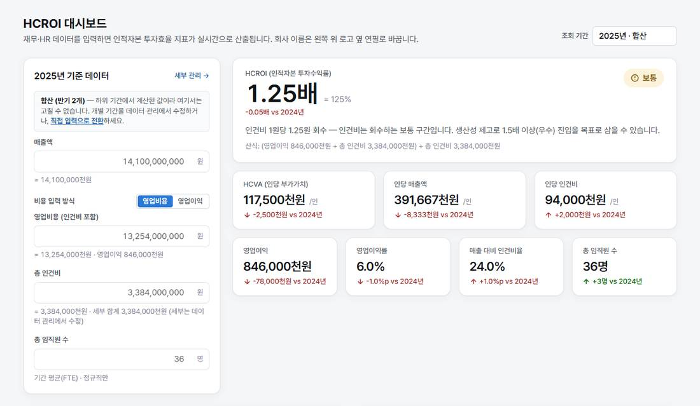

DART 결산서 → HCROI · 정원/임금 시뮬레이션 · 경영진 리포트 · 무료
DART 결산서를 엑셀에 한 칸씩 옮겨 적던 일, 이제 PDF 한 부로 끝냅니다.
사업·반기·분기보고서를 올리면 손익계산서와 직원 현황을 찾아 매출액·영업이익·인건비·임직원 수를 뽑고, 그 자리에서 HCROI 를 계산합니다. 사람이 하는 일은 뽑힌 숫자를 확인하는 것뿐입니다. 전부 이 브라우저 안에서 — 데이터는 서버로 가지 않습니다.

실제 화면 — 가상 회사 샘플, 2025년 합산. 화면 속 수치는 예시입니다.
시작하기 · 세 가지 길
숫자를 넣는 방법은 셋, 결과는 하나
어느 길이든 필요한 값은 다섯 개 — 매출액, 영업비용(또는 영업이익), 총 인건비, 임직원 수, 기간. 첫 HCROI 까지 5분.
01 · 산식
공개된 식, 검증된 계산
HCROI = (영업이익 + 총 인건비) ÷ 총 인건비
1.25배 → 인건비 1원을 쓸 때마다 1.25원을 회수하고 있다
등급은 세 단계. 1.0배 미만 위험, 1.0–1.5 보통, 1.5 이상 우수. 경계는 설명서에 적혀 있고 화면마다 다르게 계산되지 않습니다.
시뮬레이션은 가정을 바꾸는 것. 정원·임금·생산성 변동을 넣으면 영업이익과 HCROI 가 즉시 다시 계산되고, 등급을 지키는 최대 임금 인상률과 손익분기 인원도 역산합니다.
인사이트는 규칙 기반. "인당 인건비가 인당 매출보다 빠르게 늘고 있다" 같은 문장 하나하나가 어느 수치에서 나왔는지 추적됩니다. 생성형 AI 는 쓰지 않습니다.
02 · 데이터 보관
귀사 데이터는 귀사 PC 를 떠나지 않습니다
계산, 결산서 PDF 읽기, 엑셀 변환이 전부 브라우저 안에서 끝납니다. 이 도구에는 데이터를 받는 서버가 없습니다 — 올릴 곳이 없으니 유출될 곳도 없습니다. 저장은 이 PC 의 브라우저와 .hcroi 파일에만 하고, 그 파일이 곧 백업이자 동료에게 건네는 수단입니다.
서버로 보내는 것
없음. 계정도 없습니다.
저장되는 곳
이 PC 의 브라우저 저장소, 그리고 내보낸 .hcroi · 엑셀 파일
지우는 방법
설정 → "이 PC 의 데이터 지우기", 또는 브라우저 사이트 데이터 삭제. 그걸로 끝입니다.
브라우저
최신 Chrome · Edge · Safari. 휴대폰에서도 열립니다(표는 가로로 넘겨 봅니다).